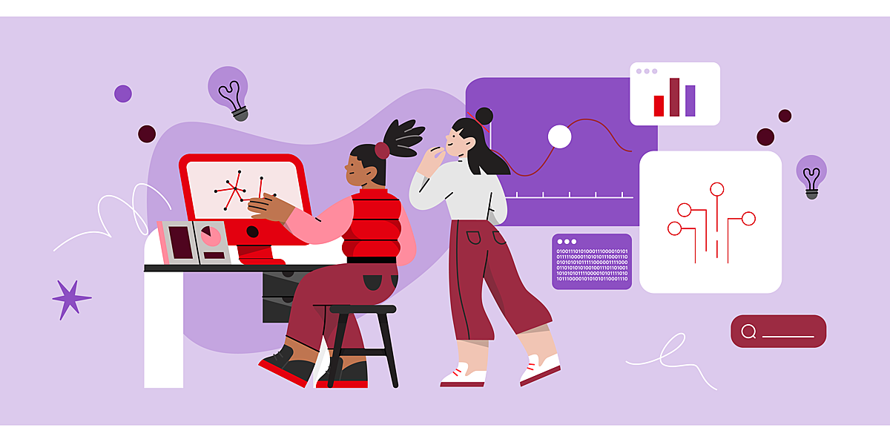

Desarrollo impulsado por IA y aprendizaje automático

La inteligencia artificial (IA) continuará transformando la forma en que se construyen los sitios web. En 2025, veremos un aumento en el uso de herramientas basadas en IA para generar diseños personalizados, optimizar la experiencia del usuario y automatizar pruebas de rendimiento.
Además, la IA también se utilizará para mejorar el SEO mediante la generación de contenido adaptado a las preferencias de los usuarios y al cumplimiento de los requisitos de los motores de búsqueda.